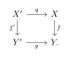
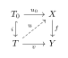

Morphisms of Schemes
Differential Geometry of Standard Schemes
Differential Geometry of Standard Schemes
Throughout this chapter, let S be a standard base ring in the sense of Definition , and put B:=\operatorname{Spec}S. Unless explicitly stated otherwise, every scheme is a standard scheme over S and every morphism is a morphism over B, in accordance with Note . We shall call objects defined relative to the fixed base B absolute; objects defined relative to a morphism f\colon X\to Y will be called relative.
Remark 3.1 (Scope and Corrections to the Earlier Draft). The theory developed below does not require irreducibility or reducedness. In fact, Kähler differentials and relative tangent spaces are naturally defined for arbitrary schemes. The standard hypotheses are used only to guarantee Noetherianity, finite presentation, coherence, and finite-dimensional pointwise tangent spaces. Thus no retreat to the category of standard varieties is needed for the main constructions.
Several distinctions are essential.
At a non-rational point, the relative cotangent space is not generally \mathfrak m_x/\mathfrak m_x^2. The correct object is \Omega^1_{X/Y,x}\otimes\kappa(x).
The map from a conormal module to a module of differentials need not be injective. Consequently, a conormal sequence is generally right exact rather than short exact.
The tangent sheaf need not be locally free, and its fibre need not equal the pointwise tangent space. They agree under additional hypotheses, for example when the differential sheaf is locally free near the point.
The relative spectrum constructions called tangent, cotangent, normal, and conormal bundles in the earlier draft are omitted here. Their natural setting is the later theory of affine morphisms, linear spaces, regular immersions, and intersection theory.
Relative Differential
Standard Morphisms Admit Finite Polynomial Presentations
Proposition 3.1 (Finite Presentation of Standard Morphisms). Let f\colon X\to Y be a morphism of standard schemes over S. Then f is of finite presentation. More precisely, for every x\in X there are affine open neighbourhoods x\in U=\operatorname{Spec}A and f(x)\in V=\operatorname{Spec}C with f(U)\subseteq V and an isomorphism of C-algebras A\cong C[T_1,\ldots,T_n]/(F_1,\ldots,F_r) for some finite families of variables and equations.
Proof. By the standard-category convention, f is of finite type. The scheme Y is Noetherian, so every affine coordinate ring C on Y is Noetherian. After shrinking around x, the coordinate ring A is a finite type C-algebra. Hence there is a surjection C[T_1,\ldots,T_n]\twoheadrightarrow A. Its kernel is finitely generated because the polynomial ring is Noetherian, giving the asserted presentation. ◻
Remark 3.1 (Polynomial Models are Auxiliary, Differentials are Intrinsic). A presentation A\cong C[T_1,\ldots,T_n]/I is never canonical. The variables, the ambient affine space, and the generators of I may all be changed. The module \Omega^1_{A/C} and the tangent spaces obtained from it are intrinsic. A Jacobian matrix is therefore a matrix presentation of an intrinsic linear map, not the definition of the geometry itself.
Derivations and Square-Zero Extensions
Definition 3.1 (Relative Derivation). Let R\to A be a homomorphism of rings and let M be an A-module. An R-derivation of A with values in M is an additive map D\colon A\longrightarrow M such that D(r)=0\quad(r\in R), \qquad D(ab)=aD(b)+bD(a)\quad(a,b\in A). The A-module of such derivations is denoted by \operatorname{Der}_R(A,M).
Here and below, D(r)=0 means that D annihilates the image of R in A. The Leibniz rule immediately gives D(1)=0 and D(a^m)=ma^{m-1}D(a).
Definition 3.2 (Square-Zero Extension). Let C be a ring and let M be a C-module. The trivial square-zero extension of C by M is the ring C\oplus M, \qquad (c,m)(c',m')=(cc',cm'+c'm). The ideal 0\oplus M has square zero, and the projection C\oplus M\twoheadrightarrow C is a ring homomorphism.
Proposition 3.1 (Derivations as First-Order Liftings). Let R\to A and R\to C be ring maps, let \varphi\colon A\to C be an R-algebra homomorphism, and let M be a C-module. Give M the induced A-module structure through \varphi. Then there is a natural bijection \operatorname{Der}_R(A,M) \xrightarrow{\sim} \left\{ \widetilde\varphi\colon A\to C\oplus M \ \middle|\ \widetilde\varphi\text{ is an $R$-algebra map and } \operatorname{pr}_C\circ\widetilde\varphi=\varphi \right\}, given by D\longmapsto\left(a\longmapsto(\varphi(a),D(a))\right).
Proof. Multiplicativity of a\mapsto(\varphi(a),D(a)) is exactly the Leibniz rule. Conversely, the second component of any lifting is additive, annihilates R, and satisfies the Leibniz rule because M^2=0. ◻
This proposition is the algebraic replacement for taking the velocity of an infinitesimal curve. It is also the conceptual origin of the use of dual numbers in tangent-space theory.
The Module of Kähler Differentials
Definition 3.3 (Module of Relative Differentials). Let R\to A be a ring map. A module of Kähler differentials of A over R is an A-module \Omega^1_{A/R} equipped with an R-derivation d_{A/R}\colon A\longrightarrow\Omega^1_{A/R} satisfying the following universal property: for every A-module M, composition with d_{A/R} induces a functorial isomorphism \operatorname{Hom}_A(\Omega^1_{A/R},M) \xrightarrow{\sim} \operatorname{Der}_R(A,M).
The universal property determines \Omega^1_{A/R} uniquely up to a unique isomorphism. There are two complementary constructions.
Proposition 3.1 (Generators-and-Relations Construction). The A-module \Omega^1_{A/R} is generated by formal symbols da, a\in A, subject to the relations d(a+b)=da+db, \qquad d(ab)=a\,db+b\,da, \qquad dr=0\quad(r\in R). The map a\mapsto da is the universal R-derivation.
Proof. Every R-derivation sends the displayed relations to zero, and hence factors uniquely through the quotient module defined by those relations. This is exactly the universal property. ◻
Proposition 3.1 (Diagonal Construction and First Principal Parts). Let \mu\colon A\otimes_R A\longrightarrow A, \qquad a\otimes b\longmapsto ab, and put I:=\ker\mu. Then \Omega^1_{A/R}\cong I/I^2, \qquad da=1\otimes a-a\otimes1\pmod{I^2}. If P^1_{A/R}:=(A\otimes_R A)/I^2, then there is a split exact sequence of A-modules 0\longrightarrow\Omega^1_{A/R} \longrightarrow P^1_{A/R} \xrightarrow{\mu}A \longrightarrow0, where the A-module structure is induced by the first tensor factor. The two maps p_1(a)=a\otimes1, \qquad p_2(a)=1\otimes a satisfy the exact first-order identity p_2(a)=p_1(a)+da.
Proof. The difference p_2-p_1 is an R-derivation with values in the square-zero ideal I/I^2. Conversely, for an R-derivation D\colon A\to M, the formula \sum_i a_i\otimes b_i\longmapsto\sum_i a_iD(b_i) sends I^2 to zero and induces the unique A-linear map I/I^2\to M through which D factors. The splitting is induced by p_1. ◻
Remark 3.1 (The Exact Algebraic First-Order Taylor Formula). Let P=R[T_1,\ldots,T_n] and set \delta T_i:=1\otimes T_i-T_i\otimes1\in P^1_{P/R}. Since every product \delta T_i\delta T_j vanishes modulo I^2, one has the exact identity 1\otimes F =F\otimes1+ \sum_{i=1}^n \left(\frac{\partial F}{\partial T_i}\otimes1\right)\delta T_i \qquad\text{ in }P^1_{P/R} for every polynomial F\in P. Thus the Jacobian is not an analytic approximation: it is the exact linear part of polynomial substitution after all terms of order at least two have been killed.
Polynomial Algebras, Quotients, and Jacobian Presentations
Proposition 3.1 (Differentials of a Polynomial Algebra). Let P=R[T_1,\ldots,T_n]. Then \Omega^1_{P/R} \cong \bigoplus_{j=1}^n P\,dT_j, and for every F\in P, dF=\sum_{j=1}^n\frac{\partial F}{\partial T_j}\,dT_j.
Proof. An R-derivation D\colon P\to M is uniquely determined by the arbitrary values D(T_1),\ldots,D(T_n). The displayed free module therefore represents the functor M\mapsto\operatorname{Der}_R(P,M). ◻
Proposition 3.1 (Conormal Sequence for a Quotient). Let P be an R-algebra, let J\subseteq P be an ideal, and put A=P/J. There is a canonical exact sequence of A-modules J/J^2 \xrightarrow{\ d\ } \Omega^1_{P/R}\otimes_P A \longrightarrow \Omega^1_{A/R} \longrightarrow0, where the first map sends the class of F\in J to dF\otimes1.
Proof. Every R-derivation of P descends to A exactly when it annihilates J. Applying \operatorname{Hom}_A(-,M) and the universal property of differentials gives the asserted right exact sequence. The Leibniz rule shows that J^2 maps to zero after tensoring with A. ◻
Corollary 3.1 (Jacobian Presentation of a Differential Module). Suppose A=R[T_1,\ldots,T_n]/(F_1,\ldots,F_r). Then \Omega^1_{A/R} has the finite presentation A^r \xrightarrow{\ J_F^{\mathsf t}\ } A^n \longrightarrow \Omega^1_{A/R} \longrightarrow0, where J_F= \left(\frac{\partial F_i}{\partial T_j}\right)_ {\substack{1\le i\le r\\1\le j\le n}} and the i-th basis vector of A^r is sent to \mathrm{d}F_i=\sum_{j=1}^n \frac{\partial F_i}{\partial T_j}\,dT_j. No regular-sequence hypothesis is required, and the first arrow need not be injective.
Formal Properties of Differential Modules
Proposition 3.1 (Localization and Base Change). Let R\to A be a ring map.
If W\subseteq A is multiplicatively closed, then W^{-1}\Omega^1_{A/R} \xrightarrow{\sim} \Omega^1_{W^{-1}A/R}.
If R\to R' is a ring map and A':=A\otimes_RR', then \Omega^1_{A/R}\otimes_AA' \xrightarrow{\sim} \Omega^1_{A'/R'}.
Proof. Both statements follow from the universal property. A derivation extends uniquely across localization by the quotient rule, and an R'-derivation of A' is equivalent to an R-derivation of A with values in the same A'-module. ◻
Proposition 3.1 (Transitivity Sequence). For ring maps R\to A\to C, there is a canonical exact sequence of C-modules \Omega^1_{A/R}\otimes_AC \longrightarrow \Omega^1_{C/R} \longrightarrow \Omega^1_{C/A} \longrightarrow0. The first map sends da\otimes c to c\,da, and the second sends dc to its class relative to A.
Proof. An R-derivation of C is an A-derivation precisely when its restriction to A vanishes. Dualizing this exact statement about derivations through the universal property gives the sequence. ◻
Tangent Spaces
The Absolute Differential Sheaf
Definition 3.4 (Absolute Differential Sheaf). Let X be a standard scheme with structure morphism p_X\colon X\to B. Its absolute differential sheaf is \Omega^1_X:=\Omega^1_{X/B}, equipped with the universal B-derivation d_X:=d_{X/B}\colon\mathcal{O}_X\longrightarrow\Omega^1_X. The word “absolute” is always relative to the fixed standard base ring S.
Proposition 3.1 (Local and Diagonal Descriptions). Let X be a standard scheme.
If U=\operatorname{Spec}A\subseteq X is affine, then \Gamma(U,\Omega^1_X)\cong\Omega^1_{A/S}.
Let \Delta_{X/B}\colon X\to X\times_BX be the diagonal. If \mathcal I_\Delta denotes its ideal sheaf on an open neighbourhood on which it is closed, then \Omega^1_X\cong\mathcal I_\Delta/\mathcal I_\Delta^2 as \mathcal{O}_X-modules.
The sheaf \Omega^1_X is coherent.
Proof. The first two assertions are the sheafified forms of the affine universal property and the diagonal construction. Since X\to B is of finite presentation, \Omega^1_X is finitely presented. Because X is Noetherian, it is coherent. ◻
Proposition 3.1 (Universal Property on Schemes). Let \mathcal F be an \mathcal{O}_X-module. Composition with d_X induces a functorial isomorphism \operatorname{Hom}_{\mathcal{O}_X}(\Omega^1_X,\mathcal F) \xrightarrow{\sim} \operatorname{Der}_B(\mathcal{O}_X,\mathcal F). In particular, the absolute tangent sheaf \mathcal T_X:= \mathcal H\!om_{\mathcal{O}_X}(\Omega^1_X,\mathcal{O}_X) is the sheaf of B-derivations of \mathcal{O}_X into itself.
Remark 3.1 (The Tangent Sheaf is not a Tangent Bundle). Although \mathcal T_X is always coherent, it need not be locally free. Moreover, there is only a natural map \mathcal T_{X,x}\otimes_{\mathcal{O}_{X,x}}\kappa(x) \longrightarrow T_xX, and this map can fail to be an isomorphism. It is an isomorphism whenever \Omega^1_X is locally free near x. Thus pointwise tangent spaces should be defined directly from the cotangent fibre, not from the fibre of the tangent sheaf.
Proposition 3.1 (Restriction, Base Change, and Products).
For every open subscheme U\subseteq X, \Omega^1_U\cong\Omega^1_X|_U.
If B'\to B is any morphism, X':=X\times_BB', and q\colon X'\to X is the projection, then q^*\Omega^1_X\cong\Omega^1_{X'/B'}.
If X and Y are standard schemes, then \Omega^1_{X\times_BY/B} \cong \operatorname{pr}_X^*\Omega^1_X \oplus \operatorname{pr}_Y^*\Omega^1_Y.
Proof. (1) Since the sheaf of relative differentials \Omega_{X/B}^1 (here denoted \Omega_X^1) is constructed by gluing affine covers, it suffices to prove the statement locally on affine open sets. Let V = \text{Spec}(B) \subseteq B be an affine open subset, W = \text{Spec}(A) \subseteq X an affine open contained in the inverse image of V, and D(f) \subseteq W an affine open distinguished subscheme for some f \in A.
In commutative algebra, for any B-algebra A and any multiplicative set S \subset A, there is a natural isomorphism of S^{-1}A-modules: S^{-1}\Omega_{A/B}^1 \cong \Omega_{(S^{-1}A)/B}^1. Taking S = \{1, f, f^2, \dots\}, this yields \Omega_{A_f/B}^1 \cong (\Omega_{A/B}^1)_f. Sheafifying these local isomorphisms over an affine open cover of U proves that \Omega_U^1 \cong \Omega_X^1|_U.
(2) The question is local on B, B', X, and X', so we may assume that all schemes are affine: B = \text{Spec}(R), B' = \text{Spec}(R'), X = \text{Spec}(A), and thus X' = \text{Spec}(A \otimes_R R'). Under this setup, the projection map q: X' \to X corresponds to the algebra map A \to A \otimes_R R' defined by a \mapsto a \otimes 1.
By standard commutative algebra for Kähler differentials, base change yields a natural isomorphism of (A \otimes_R R')-modules: \Omega_{(A \otimes_R R')/R'}^1 \cong \Omega_{A/R}^1 \otimes_A (A \otimes_R R'). The module on the right-hand side corresponds to the pullback sheaf q^*\Omega_{X/B}^1, while the left-hand side corresponds to \Omega_{X'/B'}^1. Sheafifying this canonical isomorphism gives the desired scheme-theoretic isomorphism: q^*\Omega_X^1 \cong \Omega_{X'/B'}^1.
(3) Let \text{pr}_X: X \times_B Y \to X and \text{pr}_Y: X \times_B Y \to Y be the canonical projections. By reducing to affine open subsets B = \text{Spec}(R), X = \text{Spec}(A), and Y = \text{Spec}(C), the fiber product scheme X \times_B Y is covered by affine open schemes of the form \text{Spec}(A \otimes_R C).
For R-algebras A and C, the module of Kähler differentials of the tensor product A \otimes_R C satisfies the canonical isomorphism of (A \otimes_R C)-modules: \Omega_{(A \otimes_R C)/R}^1 \cong \left(\Omega_{A/R}^1 \otimes_A (A \otimes_R C)\right) \oplus \left(\Omega_{C/R}^1 \otimes_C (A \otimes_R C)\right). Sheafifying this identity over X \times_B Y, the first direct summand corresponds to \text{pr}_X^* \Omega_X^1 and the second summand corresponds to \text{pr}_Y^* \Omega_Y^1. Thus, we obtain: \Omega_{X \times_B Y / B}^1 \cong \text{pr}_X^* \Omega_X^1 \oplus \text{pr}_Y^* \Omega_Y^1. ◻
Absolute Cotangent and Tangent Spaces
Definition 3.5 (Absolute Cotangent and Tangent Spaces). Let x\in X, let s\in B be its image, and let i_x\colon\operatorname{Spec}\kappa(x)\to X be the canonical point. The absolute cotangent space and absolute tangent space of X at x are T_x^*X :=i_x^*\Omega^1_X =\Omega^1_{X/B,x}\otimes_{\mathcal{O}_{X,x}}\kappa(x), and T_xX :=\operatorname{Hom}_{\kappa(x)}(T_x^*X,\kappa(x)).
Because \Omega^1_X is coherent, T_x^*X and T_xX are finite-dimensional \kappa(x)-vector spaces for every point x, including non-closed points.
Proposition 3.1 (Three Equivalent Descriptions of an Absolute Tangent Vector). There are canonical isomorphisms T_xX \cong \operatorname{Hom}_{\mathcal{O}_{X,x}}(\Omega^1_{X/B,x},\kappa(x)) \cong \operatorname{Der}_{\mathcal{O}_{B,s}}(\mathcal{O}_{X,x},\kappa(x)). Moreover, T_xX is naturally identified with the set of B-morphisms \theta\colon\operatorname{Spec}\kappa(x)[\varepsilon]\longrightarrow X, \qquad \varepsilon^2=0, whose restriction along \operatorname{Spec}\kappa(x)\hookrightarrow\operatorname{Spec}\kappa(x)[\varepsilon] is i_x.
Proof. The first two descriptions follow from the universal property of \Omega^1_{X/B}. A lifting to the dual numbers corresponds on local rings to a homomorphism \mathcal{O}_{X,x}\longrightarrow\kappa(x)[\varepsilon], \qquad a\longmapsto\overline a+D(a)\varepsilon, where D is an \mathcal{O}_{B,s}-derivation. The square-zero lifting proposition gives the bijection, and the vector-space operations are induced by addition and scalar multiplication on the coefficient of \varepsilon. ◻
Proposition 3.1 (The Absolute Tangent Space Lives in the Fibre). Let X_s:=X\times_B\operatorname{Spec}\kappa(s) be the scheme-theoretic fibre. Then T_xX \cong T_x(X_s/\kappa(s)). Thus the absolute tangent space relative to S measures infinitesimal directions inside the fibre over s; it does not measure motion of the base point s in B.
Proof. This is the base-change isomorphism for the differential sheaf, followed by taking the fibre at x and dualizing. ◻
Comparison with the Zariski Cotangent Space
Let \mathfrak m_x\subset\mathcal{O}_{X,x} and \mathfrak m_s\subset\mathcal{O}_{B,s} be the maximal ideals. The maximal ideal of the local ring of the fibre X_s at x is \mathfrak n_x =\mathfrak m_x/\mathfrak m_s\mathcal{O}_{X,x}.
Proposition 3.1 (Residue-Field Exact Sequence). There is a canonical right exact sequence of \kappa(x)-vector spaces \frac{\mathfrak m_x} {\mathfrak m_x^2+\mathfrak m_s\mathcal{O}_{X,x}} \longrightarrow T_x^*X \longrightarrow \Omega^1_{\kappa(x)/\kappa(s)} \longrightarrow0. Since X_s is of finite type over the field \kappa(s), the extension \kappa(x)/\kappa(s) is finitely generated. If this extension is separable, the first map is injective. Hence in that case there is a short exact sequence 0\longrightarrow \frac{\mathfrak m_x} {\mathfrak m_x^2+\mathfrak m_s\mathcal{O}_{X,x}} \longrightarrow T_x^*X \longrightarrow \Omega^1_{\kappa(x)/\kappa(s)} \longrightarrow0. If \kappa(x)/\kappa(s) is separable algebraic, then T_x^*X \cong \frac{\mathfrak m_x} {\mathfrak m_x^2+\mathfrak m_s\mathcal{O}_{X,x}}.
Proof. Apply the conormal sequence to the quotient \mathcal{O}_{X_s,x}\twoheadrightarrow\kappa(x). This gives the right exact sequence. For a finitely generated separable residue-field extension, the standard cotangent sequence for a local algebra over a field is left exact. If the extension is separable algebraic, its differential module vanishes. ◻
Corollary 3.1 (Classical Zariski Tangent Space at a Rational Point). Suppose B=\operatorname{Spec}k for a field k and x\in X(k). Then T_x^*X\cong\mathfrak m_x/\mathfrak m_x^2, \qquad T_xX\cong \operatorname{Hom}_k(\mathfrak m_x/\mathfrak m_x^2,k).
Example 3.1 (Pure Inseparability is Visible to the Relative Tangent Space). Let k be an imperfect field of characteristic p>0, choose a\in k which is not a p-th power, and put L=k[u]/(u^p-a), \qquad X=\operatorname{Spec}L. The unique local ring of X is the field L, so its maximal ideal is zero. However, \Omega^1_{L/k}\cong L\,du because d(u^p-a)=0 in characteristic p. Therefore \dim_LT_xX=1. This shows why \mathfrak m_x/\mathfrak m_x^2 cannot replace \Omega^1_{X/k,x}\otimes L at a non-separable point.
The Relative Differential Sheaf
Definition 3.6 (Relative Differential Sheaf). Let f\colon X\to Y be a morphism of standard schemes. The relative differential sheaf of X over Y is the coherent \mathcal{O}_X-module \Omega^1_{X/Y} equipped with the universal Y-derivation d_{X/Y}\colon\mathcal{O}_X\longrightarrow\Omega^1_{X/Y}. Thus, for every \mathcal{O}_X-module \mathcal F, \operatorname{Hom}_{\mathcal{O}_X}(\Omega^1_{X/Y},\mathcal F) \xrightarrow{\sim} \operatorname{Der}_Y(\mathcal{O}_X,\mathcal F).
Proposition 3.1 (Affine Description and Coherence). Let x\in X. Choose affine neighbourhoods x\in U=\operatorname{Spec}A and f(x)\in V=\operatorname{Spec}C with f(U)\subseteq V. Then \Gamma(U,\Omega^1_{X/Y})\cong\Omega^1_{A/C}. Since f is of finite presentation, \Omega^1_{X/Y} is finitely presented and hence coherent.
Proposition 3.1 (Absolute–Relative Transitivity Sequence). For a morphism f\colon X\to Y of standard schemes, there is a canonical exact sequence f^*\Omega^1_Y \xrightarrow{c_f} \Omega^1_X \longrightarrow \Omega^1_{X/Y} \longrightarrow0. Locally, c_f is characterized by c_f(da)=d(f^\sharp a).
Proof. This is the sheafified transitivity sequence for the composition X\xrightarrow{f}Y\to B. ◻
Proposition 3.1 (Conormal Sequence for a Closed Subscheme). Let i\colon Z\hookrightarrow X be a closed immersion of standard schemes over Y, defined by an ideal sheaf \mathcal I\subseteq\mathcal{O}_X. There is a canonical exact sequence of coherent \mathcal{O}_Z-modules \mathcal I/\mathcal I^2 \xrightarrow{\ d\ } i^*\Omega^1_{X/Y} \longrightarrow \Omega^1_{Z/Y} \longrightarrow0. The first map need not be injective.
Proof. The statement is local. On affine opens it is exactly Proposition . ◻
Proposition 3.1 (Relative Base Change).
Consider a Cartesian square

Relative Cotangent and Tangent Spaces
Definition 3.7 (Relative Cotangent and Tangent Spaces). Let f\colon X\to Y, let x\in X, and write y=f(x). The relative cotangent space and relative tangent space of f at x are T_x^*(X/Y) :=\Omega^1_{X/Y,x}\otimes_{\mathcal{O}_{X,x}}\kappa(x), and T_x(X/Y) :=\operatorname{Hom}_{\kappa(x)}(T_x^*(X/Y),\kappa(x)).
Proposition 3.1 (Derivations and Dual Numbers for the Relative Tangent Space). There are canonical identifications T_x(X/Y) \cong \operatorname{Der}_{\mathcal{O}_{Y,y}}(\mathcal{O}_{X,x},\kappa(x)) and T_x(X/Y) \cong \left\{ \theta\colon\operatorname{Spec}\kappa(x)[\varepsilon]\to X \ \middle|\ f\circ\theta=f\circ i_x\circ\pi, \quad \theta|_{\varepsilon=0}=i_x \right\}, where \pi\colon\operatorname{Spec}\kappa(x)[\varepsilon]\to\operatorname{Spec}\kappa(x) is the canonical morphism.
Proof. The first statement is the universal property of \Omega^1_{X/Y} at the stalk. The second is the square-zero lifting description of derivations. ◻
Proposition 3.1 (Relative Tangent Space as the Tangent Space of a Fibre). Let X_y:=X\times_Y\operatorname{Spec}\kappa(y). Then T_x(X/Y) \cong T_x(X_y/\kappa(y)).
Proof. Apply relative base change to \operatorname{Spec}\kappa(y)\to Y and take the fibre at x. ◻
Differentials of Morphisms and the Relative Tangent Exact Sequence
For a finite-dimensional \kappa(y)-vector space V, write V_{\kappa(x)}:=V\otimes_{\kappa(y)}\kappa(x).
Definition 3.8 (Tangent Morphism). Let f\colon X\to Y and x\in X, with y=f(x). Tensoring the map f^*\Omega^1_Y\to\Omega^1_X at x gives T_y^*Y\otimes_{\kappa(y)}\kappa(x) \longrightarrow T_x^*X. Its \kappa(x)-dual is the tangent morphism, or differential of f at x, \mathrm{d}f_x\colon T_xX \longrightarrow T_yY\otimes_{\kappa(y)}\kappa(x).
The final identification uses finite-dimensionality, which is automatic in the standard category.
Theorem 3.1 (Relative Tangent Exact Sequence). For every morphism f\colon X\to Y of standard schemes and every x\in X, there is a canonical exact sequence 0 \longrightarrow T_x(X/Y) \longrightarrow T_xX \xrightarrow{\mathrm{d}f_x} T_yY\otimes_{\kappa(y)}\kappa(x). In particular, T_x(X/Y)=\ker(\mathrm{d}f_x). No surjectivity assertion is made at the right-hand end.
Proof. Tensor the absolute–relative transitivity sequence with \kappa(x) to obtain the right exact sequence T_y^*Y\otimes_{\kappa(y)}\kappa(x) \longrightarrow T_x^*X \longrightarrow T_x^*(X/Y) \longrightarrow0. Duality of vector spaces is exact, so dualizing gives the asserted sequence. ◻
Proposition 3.1 (Chain Rule). Let X\xrightarrow{f}Y\xrightarrow{g}Z be morphisms of standard schemes and let x\in X, y=f(x), and z=g(y). After the natural scalar extensions, d(g\circ f)_x = \left(dg_y\otimes_{\kappa(y)}\kappa(x)\right)\circ \mathrm{d}f_x.
Proof. On cotangent spaces this is the functorial identity d((g\circ f)^\sharp a)=d(f^\sharp(g^\sharp a)). Dualizing gives the stated formula. ◻
Proposition 3.1 (Tangent Spaces and Field Extension). In the Cartesian square of Proposition , let x'\in X' map to x\in X. Then T_{x'}^*(X'/Y') \cong T_x^*(X/Y)\otimes_{\kappa(x)}\kappa(x') and T_{x'}(X'/Y') \cong T_x(X/Y)\otimes_{\kappa(x)}\kappa(x').
Proof. The cotangent statement follows from base change for \Omega^1_{X/Y}. The cotangent spaces are finite-dimensional, so duality commutes with extension of the ground field. ◻
The Relative Jacobian Formula
Theorem 3.1 (Jacobian Description of a Relative Tangent Space). Let f\colon X\to Y be a morphism of standard schemes, let x\in X, and choose a finite affine presentation around x, V=\operatorname{Spec}C\subseteq Y, \qquad U=\operatorname{Spec}A\subseteq f^{-1}(V), \qquad A\cong C[T_1,\ldots,T_n]/(F_1,\ldots,F_r). Let J_F(x) be the matrix J_F(x)= \left( \frac{\partial F_i}{\partial T_j}(x) \right) \in M_{r\times n}(\kappa(x)), obtained by reducing the coefficients and coordinates in \kappa(x). Then T_x^*(X/Y) \cong \operatorname{coker} \left( J_F(x)^{\mathsf t}\colon \kappa(x)^r\to\kappa(x)^n \right), and T_x(X/Y) \cong \ker \left( J_F(x)\colon \kappa(x)^n\to\kappa(x)^r \right).
Proof. The Jacobian presentation of \Omega^1_{A/C} gives A^r\xrightarrow{J_F^{\mathsf t}}A^n \longrightarrow\Omega^1_{A/C}\longrightarrow0. Tensoring with \kappa(x) gives the cotangent-space formula. Dualizing the resulting finite-dimensional right exact sequence gives the tangent-space formula. ◻
Remark 3.1 (Generality of the Jacobian Formula). The theorem applies simultaneously to
closed and non-closed points;
reducible schemes;
non-reduced schemes and embedded nilpotent structures;
arithmetic fibres over non-field standard base rings;
arbitrary finite presentations, without any complete-intersection or regular- sequence hypothesis.
The Jacobian criterion for smoothness is a later theorem. The kernel formula itself is purely first-order algebra and requires no smoothness assumption.
Independence of Equations and Coordinates
Proposition 3.1 (Independence of the Chosen Generators). In the setting of Theorem , the subspace \operatorname{rowspan}_{\kappa(x)}J_F(x) \subseteq\kappa(x)^n depends only on the ideal I=(F_1,\ldots,F_r) and the chosen ambient coordinates, not on the chosen generating family of I. Equivalently, the kernel defining T_x(X/Y) is unchanged when the equations are replaced by any other finite set of generators.
Proof. Intrinsically, the row space is the image of I/I^2\otimes_A\kappa(x) \longrightarrow \Omega^1_{C[T_1,\ldots,T_n]/C}\otimes_A\kappa(x) \cong\kappa(x)^n. For a direct polynomial verification, if G_a=\sum_iH_{ai}F_i, then on X dG_a =\sum_iH_{ai}\,\mathrm{d}F_i+\sum_iF_i\,dH_{ai} =\sum_iH_{ai}\,\mathrm{d}F_i. Evaluating at x shows every row associated with the G_a lies in the row span of the F_i. Applying the same argument in the opposite direction gives equality when both families generate I. ◻
Remark 3.1 (Change of Ambient Presentation). Changing the variables or embedding U into another affine space changes the matrix but not the vector space. The two cokernels are canonically identified with T_x^*(X/Y), and their dual kernels are canonically identified with T_x(X/Y). Thus different Jacobian matrices are coordinate matrices of the same intrinsic cotangent map.
Jacobian Matrix of a Morphism Between Polynomial Models
Theorem 3.1 (Polynomial Formula for the Tangent Morphism). Let X=\operatorname{Spec}A, \qquad A=S[X_1,\ldots,X_n]/I, and Y=\operatorname{Spec}C, \qquad C=S[Y_1,\ldots,Y_m]/J. Let f\colon X\to Y be determined by polynomials P_1,\ldots,P_m\in S[X_1,\ldots,X_n] satisfying f^\sharp(Y_a)=P_a\pmod I, \qquad G(P_1,\ldots,P_m)\in I\quad(G\in J). For x\in X, write y=f(x). Under the Jacobian descriptions of the absolute tangent spaces, the differential is \mathrm{d}f_x(v)=J_P(x)v, \qquad J_P(x)= \left( \frac{\partial P_a}{\partial X_j}(x) \right)_{a,j}. More explicitly, J_P(x) maps the subspace T_xX\subseteq\kappa(x)^n into T_yY\otimes_{\kappa(y)}\kappa(x)\subseteq\kappa(x)^m.
Proof. For a tangent vector v, viewed as a derivation, the chain rule for formal derivatives gives v(P_a)= \sum_{j=1}^n \frac{\partial P_a}{\partial X_j}(x)v(X_j). Hence the coordinate matrix is J_P(x). To see that the image satisfies the tangent equations of Y, take G\in J. Since G(P)\in I, every tangent vector to X annihilates d(G(P)). The polynomial chain rule gives J_G(y)J_P(x)v=0, which is exactly the required compatibility. ◻
Corollary 3.1 (Relative Tangent Space from a Stacked Jacobian). In the preceding setting, if I=(F_1,\ldots,F_r), then T_x(X/Y) = \left\{ v\in\kappa(x)^n \ \middle|\ J_F(x)v=0, \quad J_P(x)v=0 \right\}. Equivalently, T_x(X/Y) = \ker \begin{pmatrix} J_F(x)\\ J_P(x) \end{pmatrix}.
Proof. The first condition says that v is an absolute tangent vector to X. The second says that the corresponding derivation annihilates the image of every coordinate generator of C, hence annihilates C and is a C-derivation. This is precisely the definition of T_x(X/Y). ◻
Tangent-Dimension Loci and Fitting Ideals
Theorem 3.1 (Upper Semicontinuity of Relative Tangent Dimension). Let f\colon X\to Y be a morphism of standard schemes. For every integer d\ge0, the subset X_{\ge d}(f) := \left\{ x\in X \ \middle|\ \dim_{\kappa(x)}T_x(X/Y)\ge d \right\} is closed. More precisely, it is the closed locus defined by the appropriate Fitting ideal of the coherent module \Omega^1_{X/Y}.
Proof. The tangent and cotangent spaces have the same dimension. Locally choose a presentation A^r\xrightarrow{M}A^n\longrightarrow\Omega^1_{A/C}\longrightarrow0. At x, the cotangent dimension is n-\operatorname{rank}M(x). Therefore the condition that this dimension be at least d is the condition \operatorname{rank}M(x)\le n-d, which is cut out by all (n-d+1)\times(n-d+1) minors of M. Fitting ideals show that the resulting closed subscheme is independent of the chosen presentation. ◻
Corollary 3.1 (Jacobian-Minor Description). In a relative affine presentation A=C[T_1,\ldots,T_n]/(F_1,\ldots,F_r), the locus where \dim T_x(X/Y)\ge d is the zero locus of the (n-d+1)\times(n-d+1) minors of the Jacobian matrix J_F, with the usual convention when the requested size exceeds the dimensions of the matrix.
Examples Detecting Non-Reduced, Reducible, and Arithmetic Geometry
Example 3.1 (A Non-Reduced Point). Let X=\operatorname{Spec}k[t]/(t^2) over a field k, and let x be its unique point. The presentation has one equation F=t^2, so J_F(x)=(2t)(x)=0. Hence T_xX\cong k. By contrast, the reduced subscheme X_{\mathrm{red}}=\operatorname{Spec}k has zero tangent space. The tangent space therefore detects the first-order nilpotent thickening which the underlying topological space cannot see.
Example 3.1 (A Reducible Crossing). Let X=V(xy)\subseteq\mathbb A_k^2. At the origin o, the Jacobian row is J_{xy}(o)=(y(o),x(o))=(0,0), so T_oX=k^2. At a point (a,0) with a\ne0, the Jacobian has rank one and the tangent space has dimension one. The two-dimensional tangent space at the crossing records the two first-order branch directions without requiring X to be irreducible.
Example 3.1 (An Arithmetic Tangent Jump). Consider the standard scheme X=\operatorname{Spec}\mathbb Z[t]/(t^2-2) \longrightarrow\operatorname{Spec}\mathbb Z. At a point x over a prime p, let \alpha be the image of t in \kappa(x). The relative Jacobian is the 1\times1 matrix (2\alpha). If p\ne2, then 2\alpha\ne0, because \alpha^2=2, and therefore T_x(X/\mathbb Z)=0. Over p=2, one has \alpha=0 and the matrix vanishes, so \dim_{\kappa(x)}T_x(X/\mathbb Z)=1. Thus the relative tangent space detects the ramified and non-reduced special fibre by a purely polynomial calculation.
Example 3.1 (A Relative Morphism Computed by a Stacked Jacobian). Let k be a field, X=V(y^2-x^3)\subseteq\mathbb A_k^2, \qquad f\colon X\to\mathbb A_k^1, \qquad f(x,y)=x. At the origin, the equation Jacobian and morphism Jacobian are J_F(0,0)=(0,0), \qquad J_f(0,0)=(1,0). Hence T_{(0,0)}X=k^2, \qquad T_{(0,0)}(X/\mathbb A_k^1) =\ker \begin{pmatrix} 0&0\\ 1&0 \end{pmatrix} =k\cdot(0,1). The absolute tangent space contains all first-order directions compatible with the cusp equation, while the relative tangent space retains only the infinitesimal directions along the fibre of f.
Remark 3.1 (The Differential Dictionary for Standard Schemes). For a morphism f\colon X\to Y of standard schemes, the first-order geometry is organized by the following dictionary: \begin{array}{c|c} \text{Algebraic or geometric datum} & \text{First-order object}\\ \hline \text{$Y$-derivations of $\mathcal{O}_X$} & \Omega^1_{X/Y}\text{ by universality}\\ \text{diagonal }X\hookrightarrow X\times_YX & \Omega^1_{X/Y}\cong\mathcal I_\Delta/\mathcal I_\Delta^2\\ \text{first principal parts} & 0\to\Omega^1_{X/Y}\to\mathcal P^1_{X/Y}\to\mathcal{O}_X\to0\\ \text{point }x\in X & T_x^*(X/Y)=\Omega^1_{X/Y,x}\otimes\kappa(x)\\ \text{dual-number lift through }x & T_x(X/Y)=\operatorname{Hom}_{\kappa(x)}(T_x^*(X/Y),\kappa(x))\\ \text{local equations }F_1,\ldots,F_r & T_x(X/Y)=\ker J_F(x)\\ \text{morphism }f\colon X\to Y & T_x(X/Y)=\ker(\mathrm{d}f_x)\\ \text{jump of tangent dimension} & \text{Fitting ideals, equivalently Jacobian minors locally.} \end{array}
The intrinsic sheaf \Omega^1_{X/Y} is the central object. Polynomial equations supply finite matrix presentations, dual numbers interpret its fibres geometrically, and Jacobian matrices are the resulting coordinate expressions of exact first-order algebra.
Infinitesimal Thickenings and Formal Lifting Properties
First-Order and Nilpotent Thickenings
Definition 3.9 (First-Order and Nilpotent Thickenings). Let i\colon T_0\hookrightarrow T be a closed immersion defined by a quasi-coherent ideal sheaf \mathcal J\subseteq\mathcal{O}_T.
It is a first-order thickening or square-zero thickening if \mathcal J^2=0.
It is a nilpotent thickening if \mathcal J^N=0 for some N\geq 1 locally on T.
Since |T_0|=|T|, a nilpotent thickening changes only the structure sheaf and not the underlying topological space.
In the affine case, T=\operatorname{Spec}C and T_0=\operatorname{Spec}(C/J), where J\subseteq C is an ideal satisfying J^2=0 or J^N=0. The module J is naturally a C/J-module in the square-zero case.
Lemma 3.1 (Square-Zero Tests Suffice). Suppose a lifting property asks for existence, uniqueness, or unique existence of a lift across every first-order thickening of affine schemes. Then the same property holds across every affine nilpotent thickening.
Proof. Let J^N=0. Factor C\longrightarrow C/J^{N-1}\longrightarrow\cdots\longrightarrow C/J^2 \longrightarrow C/J. The kernel of C/J^{m+1}\longrightarrow C/J^m is J^m/J^{m+1}, whose square is zero because 2m\geq m+1 for m\geq1. Lift successively through this finite tower. Existence, uniqueness, and unique existence are preserved under finite iteration. ◻
Remark 3.1 (Why the Test Schemes Leave the Standard Category). A morphism f\colon X\to Y whose source and target are standard schemes will be tested against arbitrary affine Y-schemes T. This is unavoidable: an arbitrary square-zero algebra C\oplus M need not be finite type over S. The property being defined still belongs to f; the non-standard schemes are merely probes detecting its infinitesimal behaviour.
Formal Unramifiedness, Smoothness, and Étaleness
Definition 3.10 (The Three Formal Differential
Properties). Let f\colon X\to
Y be a morphism of schemes. Consider every commutative
solid diagram

The morphism f is formally unramified if there is at most one dotted lift u.
The morphism f is formally smooth if there is at least one dotted lift u.
The morphism f is formally étale if there is exactly one dotted lift u.
The adjective “formal” refers to the fact that only nilpotent infinitesimal directions are tested. Formally unramified means rigidity, formally smooth means absence of first-order obstructions, and formally étale means both simultaneously.
Proposition 3.1 (Affine Algebra Translation). Let Y=\operatorname{Spec}R and X=\operatorname{Spec}A. Then X\to Y is formally unramified, formally smooth, or formally étale if and only if, for every R-algebra C and square-zero ideal J\subseteq C, every R-algebra homomorphism A\longrightarrow C/J has at most one, at least one, or exactly one lift A\to C, respectively.
Proof. This is the contravariant equivalence between affine schemes and rings applied to the lifting square in Definition . ◻
Proposition 3.1 (The Space of Liftings is Controlled by Differentials). In the lifting diagram of Definition , let \mathcal J be the square-zero ideal defining T_0\hookrightarrow T. If a lift exists, then the set of all lifts is a principal homogeneous space under \operatorname{Hom}_{\mathcal{O}_{T_0}} \left(u_0^*\Omega^1_{X/Y},\mathcal J\right). In particular, the difference between two lifts is a Y-derivation with values in \mathcal J.
Proof. Work affinely, with T=\operatorname{Spec}C, T_0=\operatorname{Spec}(C/J), and suppose \varphi_1,\varphi_2\colon A\to C are two lifts of the same map \overline\varphi\colon A\to C/J. Their difference D:=\varphi_1-\varphi_2\colon A\longrightarrow J is R-linear. Because J^2=0 and the two maps have the same reduction modulo J, one computes D(ab)=\overline\varphi(a)D(b)+\overline\varphi(b)D(a). Hence D is an R-derivation, and by the universal property of Kähler differentials it corresponds uniquely to a homomorphism \Omega^1_{A/R}\otimes_A C/J\longrightarrow J. Conversely, adding such a derivation to one lift gives another lift. The global statement follows by the same sheafwise calculation. ◻
Theorem 3.1 (Formal Unramifiedness is Vanishing of Differentials). For an arbitrary morphism of schemes f\colon X\to Y, the following are equivalent:
f is formally unramified;
\Omega^1_{X/Y}=0;
every relative tangent space T_x(X/Y) is zero, provided \Omega^1_{X/Y} is of finite type.
Proof. The implication (ii)\Rightarrow(i) follows immediately from Proposition . For the converse, let \Delta\colon X\to X\times_YX be the diagonal and let X^{(1)} be its first infinitesimal neighbourhood. The two projections p_1,p_2\colon X^{(1)}\longrightarrow X agree on X\subseteq X^{(1)}. Formal unramifiedness forces p_1=p_2. The differences p_1^\#(a)-p_2^\#(a) generate the conormal sheaf of the diagonal, which is \Omega^1_{X/Y}. Hence this sheaf vanishes.
If \Omega^1_{X/Y} is of finite type, then its stalk at x vanishes if and only if its fibre \Omega^1_{X/Y,x}\otimes\kappa(x)=T_x^*(X/Y) vanishes, by Nakayama’s lemma. Dualizing gives (iii). ◻
Theorem 3.1 (Formal and Geometric Properties Coincide in the Standard Category). Let f\colon X\to Y be a morphism of standard schemes. Then \begin{align*} f\text{ is formally unramified} &\iff f\text{ is unramified},\\ f\text{ is formally smooth} &\iff f\text{ is smooth},\\ f\text{ is formally \'etale} &\iff f\text{ is \'etale}. \end{align*}
Proof. Every standard morphism is of finite presentation. For arbitrary schemes, unramified morphisms are exactly the locally finite type formally unramified morphisms; smooth morphisms are exactly the locally finitely presented formally smooth morphisms; and étale morphisms are exactly the locally finitely presented formally étale morphisms. The finiteness hypotheses are therefore automatic here. ◻
Unramified Morphisms
Fibrewise Definition and Intrinsic Characterizations
Definition 3.11 (Unramified Morphism in the Standard Category). Let f\colon X\to Y be a morphism of standard schemes.
We say that f is unramified at x\in X if, for y=f(x), the local fibre (X_y)_x is the spectrum of the finite separable extension \kappa(x)/\kappa(y).
We say that f is unramified if it is unramified at every point.
Equivalently, every fibre X_y is a disjoint union of spectra of finite separable extensions of \kappa(y).
Thus an unramified fibre has no positive-dimensional directions, no nilpotent directions, and no inseparable residue-field directions.
Theorem 3.1 (Equivalent Criteria for Unramifiedness). Let f\colon X\to Y be a morphism of standard schemes, let x\in X, and set y=f(x). The following are equivalent:
f is unramified at x;
\mathfrak m_y\mathcal{O}_{X,x}=\mathfrak m_x \quad\text{and}\quad \kappa(x)/\kappa(y)\text{ is finite separable};
\Omega^1_{X/Y,x}=0;
T_x(X/Y)=0;
f is formally unramified in a neighbourhood of x;
the diagonal \Delta_f\colon X\longrightarrow X\times_YX is an open immersion in a neighbourhood of x.
Proof. Since f is of finite presentation, the usual local criterion for unramifiedness applies. The local ring of the fibre at x is \mathcal{O}_{X,x}/\mathfrak m_y\mathcal{O}_{X,x}. It equals \kappa(x) precisely when \mathfrak m_y\mathcal{O}_{X,x}=\mathfrak m_x, giving (i)\Leftrightarrow(ii), with separability recording geometric reducedness of the point.
The equivalence (ii)\Leftrightarrow(iii) is the local differential criterion for a finite type ring map. Since \Omega^1_{X/Y} is coherent, Nakayama’s lemma gives (iii)\Leftrightarrow(iv). Theorem gives (iii)\Leftrightarrow(v). Finally, \Omega^1_{X/Y} is the conormal sheaf of the diagonal. For a diagonal of finite presentation, vanishing of this conormal sheaf is equivalent locally to the diagonal being an open immersion, yielding (iii)\Leftrightarrow(vi). ◻
Corollary 3.1 (Unramifiedness is Purely Fibrewise for Standard Morphisms). A morphism f\colon X\to Y of standard schemes is unramified if and only if every fibre is a zero-dimensional geometrically reduced standard variety over its residue field. Equivalently, after extending \kappa(y) to an algebraic closure, every geometric fibre is a discrete reduced finite type scheme.
Proof. A finite type scheme over a field is zero-dimensional and geometrically reduced if and only if it is a disjoint union of spectra of finite separable field extensions. ◻
Polynomial and Jacobian Criterion for Unramifiedness
Let V=\operatorname{Spec}C\subseteq Y and U=\operatorname{Spec}A\subseteq f^{-1}(V), \qquad A=C[T_1,\ldots,T_n]/(F_1,\ldots,F_r). For x\in U write \kappa=\kappa(x). The Jacobian presentation from the previous chapter gives \kappa^r\xrightarrow{J_F(x)^{\mathsf t}}\kappa^n \longrightarrow T_x^*(X/Y)\longrightarrow0, and hence T_x(X/Y)=\ker J_F(x).
Theorem 3.1 (Jacobian Criterion for Unramifiedness). In the local polynomial model above, the following are equivalent:
f is unramified at x;
J_F(x)\colon\kappa^n\to\kappa^r is injective;
\operatorname{rank}_{\kappa}J_F(x)=n;
some n\times n minor of J_F is nonzero at x.
In particular, unramifiedness is detected by ordinary formal partial derivatives over the coefficient ring C; no reducedness or irreducibility is required.
Proof. By Theorem , f is unramified at x if and only if T_x(X/Y)=0. The Jacobian formula identifies this tangent space with \ker J_F(x), proving the equivalence. Full column rank is equivalent to the nonvanishing of an n\times n minor. ◻
Remark 3.1 (The Number of Equations is not Intrinsic). The criterion does not assert that the ideal (F_1,\ldots,F_r) is minimally generated by n equations. It says only that the differentials of some n elements of the ideal span the n ambient cotangent directions at x. This is invariant under changing generators because it is the intrinsic condition \Omega^1_{X/Y,x}=0.
Structural Properties of Unramified Morphisms
Proposition 3.1 (Stability and Geometry of Unramified Morphisms). For morphisms of standard schemes:
the unramified locus is open in the source;
open and closed immersions, and hence all immersions, are unramified;
unramified morphisms are stable under composition and arbitrary base change;
if X\xrightarrow{f}Y\xrightarrow{g}Z and g\circ f is unramified, then f is unramified;
every unramified morphism is locally quasi-finite;
if g\colon Y\to Z is unramified, then the graph of every Z-morphism f\colon X\to Y, \Gamma_f\colon X\longrightarrow X\times_ZY, is an open immersion;
a section of an unramified standard morphism is an open-and-closed immersion;
unramifiedness descends under faithfully flat base change.
Proof. The vanishing locus of the coherent sheaf \Omega^1_{X/Y} is open, proving (1). An immersion is a monomorphism, so its relative differential sheaf is zero, proving (2). Base change follows from base change for differentials. Composition and (4) follow from the transitivity sequence f^*\Omega^1_{Y/Z}\longrightarrow\Omega^1_{X/Z} \longrightarrow\Omega^1_{X/Y}\longrightarrow0. The fibre description shows that points are isolated in their fibres, giving local quasi-finiteness. The graph is the base change of the diagonal of Y\to Z, proving (6). A section is therefore open; it is also closed because standard morphisms are separated. Finally, if Y'\to Y is faithfully flat and the base change of f\colon X\to Y is unramified, then the faithfully flat pullback of \Omega^1_{X/Y} vanishes. Faithful flatness detects the zero module, so \Omega^1_{X/Y}=0 and f is unramified. ◻
Example 3.1 (Closed Immersions are Unramified but Need not be Reduced). Let A be any ring and I\subseteq A any ideal. The closed immersion \operatorname{Spec}(A/I)\hookrightarrow\operatorname{Spec}A is unramified because \Omega^1_{(A/I)/A}=0. Thus unramifiedness does not mean that the source itself is reduced. It means that there are no infinitesimal directions relative to the target.
Example 3.1 (Purely Inseparable Field Extensions are Ramified). Let k have characteristic p>0, choose a\in k\setminus k^p, and set K=k[T]/(T^p-a). Then K is a field, but \Omega^1_{K/k}=K\,dT because d(T^p-a)=0. Hence \operatorname{Spec}K\to\operatorname{Spec}k is neither unramified nor smooth nor étale. The obstruction is inseparability, not singularity of the ring K.
Finite Unramified Morphisms and Closed Immersions
Theorem 3.1 (Corrected Finite Closed-Immersion Criterion). Let \pi\colon X\to Y be a finite morphism of standard schemes. The following are equivalent:
\pi is a closed immersion;
for every y\in Y, the fibre X_y is either empty or isomorphic to \operatorname{Spec}\kappa(y);
\pi is unramified and radicial, equivalently universally injective;
\pi is unramified, injective on points, and \kappa(x)=\kappa(\pi(x)) for every x\in X.
Proof. A closed immersion remains a closed immersion after every base change, and the only closed subschemes of \operatorname{Spec}\kappa(y) are the empty scheme and the whole point. Thus (i) implies (ii). Condition (ii) implies (iv) by inspecting the local rings of the fibres. Condition (iv) implies (iii), since a morphism is radicial precisely when it is injective on points and all residue-field extensions are purely inseparable.
Assume (iii). Unramifiedness makes the diagonal \Delta_\pi\colon X\longrightarrow X\times_YX an open immersion. Radiciality makes this diagonal surjective on points; hence it is an isomorphism. Thus \pi is a monomorphism. A finite monomorphism is a closed immersion, proving (i). ◻
Remark 3.1 (Why Injectivity on Points Alone is Insufficient). The residue-field condition in the theorem cannot be omitted. If L/k is a finite separable extension of degree greater than 1, then \operatorname{Spec}L\longrightarrow\operatorname{Spec}k is finite, unramified, and injective on the underlying one-point spaces, but it is not a closed immersion because the ring homomorphism k\to L is not surjective. This corrects the corresponding claim in the earlier draft.
Smooth Morphisms
Geometric Regularity of Fibres
Definition 3.12 (Geometrically Regular Scheme over a Field). Let k be a field and let W be a locally Noetherian k-scheme. We call W geometrically regular over k if, for every finite field extension k'/k, the base change W_{k'} is regular. Equivalently, it is enough to test all finitely generated field extensions, or all finite purely inseparable extensions.
For a finite type scheme over a field, geometric regularity is equivalent to smoothness over that field. This is the correct fibre condition over an arbitrary base.
Definition 3.13 (Smooth Morphism in the Standard Category). A morphism f\colon X\to Y of standard schemes is smooth if
f is flat, and
for every y\in Y, the fibre X_y is geometrically regular over \kappa(y).
It is smooth at x if these conditions hold after restricting to a neighbourhood of x.
The finite-presentation condition appearing in the general definition of smoothness is absent only because it is automatic for standard morphisms.
Theorem 3.1 (Equivalent Criteria for Smoothness). Let f\colon X\to Y be a morphism of standard schemes and let x\in X with y=f(x). The following are equivalent:
f is smooth at x;
\mathcal{O}_{Y,y}\to\mathcal{O}_{X,x} is flat and the fibre X_y is smooth at x;
\mathcal{O}_{Y,y}\to\mathcal{O}_{X,x} is flat and X_y is geometrically regular at x;
f is formally smooth in a neighbourhood of x;
locally near x, the morphism is standard smooth in the polynomial sense of Theorem below.
Proof. The equivalence of (i)–(iii) is the fibrewise criterion for a locally finitely presented morphism. The equivalence (i)\Leftrightarrow(iv) is the infinitesimal lifting criterion, since f is of finite presentation. Smooth ring maps are locally standard smooth, and standard smooth ring maps are smooth, giving (i)\Leftrightarrow(v). ◻
The Two-Term Conormal Complex
Let R\to A be a finite presentation and choose A=P/I, \qquad P=R[T_1,\ldots,T_n]. The naive cotangent complex attached to this presentation is the two-term complex \mathbb L^{\mathrm{naive}}_{A/R} = \left[ I/I^2\xrightarrow{d} \Omega^1_{P/R}\otimes_PA \right] = \left[ I/I^2\xrightarrow{J^{\mathsf t}} A^n \right], with I/I^2 in degree -1. Its degree-0 homology is \Omega^1_{A/R}; its degree-(-1) homology records hidden relations among the chosen equations.
Theorem 3.1 (Differential Complex Criterion for Smoothness). A finite presentation R\to A is smooth at a prime \mathfrak p\subseteq A if and only if, after localizing at \mathfrak p,
I/I^2\to A^n is injective, and
its cokernel \Omega^1_{A/R} is a finite free module locally near \mathfrak p.
Equivalently, the two-term complex is locally quasi-isomorphic to a finite free module concentrated in degree 0.
Remark 3.1 (Why Local Freeness of Differentials is not Enough). The module \Omega^1_{A/R} sees only the cokernel of the Jacobian map. Smoothness also requires the kernel in degree -1 to vanish. Thus a locally free differential module may coexist with hidden infinitesimal equations.
Example 3.1 (Flat with Free Differentials but not Smooth). Let R=\mathbf F_p[s], \qquad A=\mathbf F_p[t], \qquad s\longmapsto t^p. The R-module A is finite free with basis 1,t,\ldots,t^{p-1}, so the map is flat. Moreover, \Omega^1_{A/R}=A\,dt is free of rank 1. Nevertheless the fibres are defined by t^p-a and become non-reduced after adjoining a pth root of a. Therefore the morphism is not smooth. In the presentation A\cong R[T]/(T^p-s), the Jacobian map is zero, so its degree-(-1) kernel is nonzero.
Standard Smooth Polynomial Models
Definition 3.14 (Standard Smooth Polynomial Algebra). Let R be a ring. An R-algebra A=R[T_1,\ldots,T_n]/(G_1,\ldots,G_c), \qquad c\leq n, is standard smooth if some c\times c minor \Delta= \det\left(\frac{\partial G_i}{\partial T_{j_\ell}}\right)_{1\leq i,\ell\leq c} maps to a unit of A. Its relative dimension is n-c.
After permuting the variables, one may assume j_\ell=\ell.
Theorem 3.1 (Local Jacobian Criterion for Smoothness). Let A=R[T_1,\ldots,T_n]/I be a finitely presented R-algebra and let \mathfrak p\in\operatorname{Spec}A. The map R\to A is smooth at \mathfrak p if and only if there exist G_1,\ldots,G_c\in I and h\in A\setminus\mathfrak p such that
I_h=(G_1,\ldots,G_c) in R[T_1,\ldots,T_n]_h, and
some c\times c Jacobian minor of the G_i is invertible in A_h.
Thus every smooth standard morphism is locally obtained by solving c polynomial equations for c variables with an invertible linearization.
Proof. If the two conditions hold, the conormal module is free on the classes of the G_i, and the Jacobian map identifies it with a direct summand of A_h^n. Its cokernel is free of rank n-c, so Theorem gives smoothness.
Conversely, a smooth finitely presented algebra is locally standard smooth. Applied at \mathfrak p, this supplies the required local generators and invertible minor. ◻
Exact Infinitesimal Newton Method
The polynomial criterion admits a direct lifting proof which makes the relationship with ordinary differential calculus completely explicit.
Lemma 3.1 (Square-Zero Taylor Formula). Let C be a ring, J\subseteq C an ideal with J^2=0, and let a=(a_1,\ldots,a_n)\in C^n, \delta=(\delta_1,\ldots,\delta_n)\in J^n. For every polynomial F\in R[T_1,\ldots,T_n] one has the exact identity F(a+\delta) =F(a)+\sum_{j=1}^n \frac{\partial F}{\partial T_j}(a)\delta_j.
Proof. Expand every monomial. Terms containing two or more factors from J vanish because J^2=0; the remaining linear terms are precisely the formal partial derivatives. ◻
Theorem 3.1 (Polynomial Lifting for a Standard Smooth Algebra). Let A=R[T_1,\ldots,T_n]/(G_1,\ldots,G_c) be standard smooth, and suppose the Jacobian block in the first c variables has invertible determinant. Let C\twoheadrightarrow C/J be a square-zero extension of R-algebras. Then every R-algebra map A\to C/J lifts to A\to C.
More precisely, after arbitrary lifts a_j\in C of the images of T_j, set e_i=G_i(a_1,\ldots,a_n)\in J. There are unique corrections \delta_1,\ldots,\delta_c\in J with \delta_{c+1}=\cdots=\delta_n=0 such that G_i(a_1+\delta_1,\ldots,a_n+\delta_n)=0 \quad(1\leq i\leq c).
Proof. Let M=\left(\frac{\partial G_i}{\partial T_j}(a)\right)_{1\leq i,j\leq c}. Its determinant is a unit modulo J, hence a unit in C. By the square-zero Taylor formula, the corrected equations are e+M\delta=0. The unique solution is \delta=-M^{-1}e. The resulting corrected coordinate map annihilates all G_i and therefore factors through A. ◻
Remark 3.1 (Geometric Meaning of the Free Variables). If corrections in the remaining n-c variables are also allowed, the set of all lifts is a torsor under \operatorname{Hom}_A(\Omega^1_{A/R},J)\cong J^{n-c}. The n-c free correction parameters are exactly the relative tangent directions. When c=n, there are no free variables and the lift is unique; this is the étale case.
Consequences and Stability of Smoothness
Proposition 3.1 (Differential Consequences of Smoothness). Let f\colon X\to Y be smooth.
\Omega^1_{X/Y} is finite locally free.
Its rank is locally constant; on a component where the rank is d, every nonempty fibre is smooth and equidimensional of dimension d.
For every x\in X, \dim_{\kappa(x)}T_x(X/Y)=d.
The infinitesimal lifting property makes the tangent map \mathrm{d}f_x\colon T_xX\longrightarrow T_{f(x)}Y\otimes_{\kappa(f(x))}\kappa(x) surjective, and its kernel is T_x(X/Y).
A smooth morphism is open.
Proof. These assertions may be checked on a standard smooth polynomial model. There the differential sheaf is free on the n-c unsolved coordinate differentials. The tangent assertions follow by duality and the lifting interpretation. Openness follows from the fibrewise local structure of smooth morphisms. ◻
Proposition 3.1 (Stability and Descent of Smooth Morphisms). Smooth morphisms of standard schemes are stable under composition, arbitrary base change, products, and restriction to open subschemes. Smoothness is local on the source and target and descends under faithfully flat base change.
Proof. Finite presentation and flatness have these properties, and geometric regularity of fibres is preserved and detected after field extension. Equivalently, one may use formal smoothness and the local standard smooth models. ◻
Standard Varieties over Perfect and Imperfect Fields
Let k be a field and let X be a standard variety over k. The structure morphism X\to\operatorname{Spec}k is automatically flat, so smoothness is entirely a question of geometric regularity.
Theorem 3.1 (Smoothness over an Arbitrary Field). Let x\in X. The following are equivalent:
X is smooth over k at x;
X is geometrically regular over k at x;
the local ring \mathcal{O}_{X,x} is regular and the finitely generated field extension \kappa(x)/k is separable.
Proof. A finite type k-scheme is smooth exactly when it is geometrically regular. A smooth point has a regular local ring and a separable residue extension. Conversely, a regular local ring together with separability of the residue extension satisfies the differential criterion for smoothness over a field. ◻
Corollary 3.1 (Perfect-Field Simplification). If k is perfect, then X\text{ is smooth at }x \iff \mathcal{O}_{X,x}\text{ is regular}. Consequently, for a reduced standard variety over a perfect field, the smooth locus is the regular locus and is a dense open subset.
Proof. Every finitely generated extension of a perfect field is separable, so the separability condition in Theorem is automatic. The density statement follows because the local rings at the generic points of a reduced Noetherian scheme are fields. ◻
Theorem 3.1 (Classical Jacobian Criterion over a Perfect Field). Let k be perfect and X=\operatorname{Spec}A, \qquad A=k[T_1,\ldots,T_n]/(F_1,\ldots,F_r). Let x\in X, let \kappa=\kappa(x), and write J_F(x) for the evaluated relative Jacobian. Then X is smooth at x if and only if n-\operatorname{rank}_{\kappa}J_F(x) =\dim\mathcal{O}_{X,x}+\operatorname{trdeg}_k\kappa(x). If x is closed, this reduces to \operatorname{rank}J_F(x)=n-\dim\mathcal{O}_{X,x}. If moreover k is algebraically closed, every closed point is k-rational and this is the usual classical Jacobian criterion.
Proof. Since k is perfect, \kappa(x)/k is separable and the residue-field cotangent sequence is short exact: 0\longrightarrow\mathfrak m_x/\mathfrak m_x^2 \longrightarrow\Omega^1_{A/k}\otimes_A\kappa \longrightarrow\Omega^1_{\kappa/k}\longrightarrow0. The middle term has dimension n-\operatorname{rank}J_F(x), while the last term has dimension \operatorname{trdeg}_k\kappa(x). Smoothness is equivalent to regularity, which is equivalent to \dim_{\kappa}\mathfrak m_x/\mathfrak m_x^2 =\dim\mathcal{O}_{X,x}. Combining these equalities gives the formula. ◻
Imperfect Fields and the Role of a p-Basis
Definition 3.15 (p-Basis). Let k be a field of characteristic p>0. A family \{b_\lambda\}_{\lambda\in\Lambda}\subseteq k is a p-basis of k if the monomials \prod_{\lambda}b_\lambda^{e_\lambda}, \qquad 0\leq e_\lambda<p, with finite support form a basis of k over k^p. Equivalently, \{db_\lambda\}_{\lambda\in\Lambda} is a basis of the k-vector space \Omega^1_{k/\mathbf F_p}.
Theorem 3.1 (Intrinsic Imperfect-Field Criterion). Let k have characteristic p>0, and let (A,\mathfrak m,K) be a Noetherian local k-algebra. Then A is geometrically regular over k if and only if
A is a regular local ring, and
the canonical map \Omega^1_{k/\mathbf F_p}\otimes_kK \longrightarrow \Omega^1_{A/\mathbf F_p}\otimes_AK is injective.
Therefore, for a finite type k-scheme, smoothness is ordinary regularity plus the survival of all coefficient p-directions.
Remark 3.1 (What the p-Basis is Actually Needed For). If an explicit presentation A=k[T_1,\ldots,T_n]/I is available, the relative Jacobian matrix with respect to the variables T_j already gives a correct smoothness test over arbitrary k through Theorem . No p-basis is needed.
A p-basis enters when one wants to use only the regularity of A_\mathfrak p and must determine whether this regularity remains after purely inseparable extensions of k. The extra coefficient differentials db_\lambda record precisely the directions invisible to ordinary regularity.
Assume now that k has a finite p-basis b_1,\ldots,b_e. Let \partial/\partial b_\ell be the \mathbf F_p-derivation of k dual to db_\ell, and extend it to k[T_1,\ldots,T_n] by fixing the variables. For F_1,\ldots,F_r define the augmented absolute Jacobian J_F^{\mathrm{abs}} = \left( \frac{\partial F_i}{\partial b_1},\ldots, \frac{\partial F_i}{\partial b_e} \;\middle|\; \frac{\partial F_i}{\partial T_1},\ldots, \frac{\partial F_i}{\partial T_n} \right)_{1\leq i\leq r}.
Proposition 3.1 (Matrix Form of the p-Basis Correction). Let A=k[T_1,\ldots,T_n]/(F_1,\ldots,F_r), \qquad x\in\operatorname{Spec}A, \qquad K=\kappa(x). The rows of J_F^{\mathrm{abs}}(x) present \Omega^1_{A/\mathbf F_p}\otimes_AK as a quotient of K^{e+n}. Let R_x\subseteq K^{e+n} be their row span and let C_x=K^e\oplus0\subseteq K^{e+n} be the coefficient-direction subspace. Then the coefficient map \Omega^1_{k/\mathbf F_p}\otimes_kK \longrightarrow \Omega^1_{A/\mathbf F_p}\otimes_AK is injective if and only if R_x\cap C_x=0. Consequently, X is smooth over k at x if and only if \mathcal{O}_{X,x} is regular and R_x\cap C_x=0.
Proof. The decomposition \Omega^1_{k[T]/\mathbf F_p} \cong \left(k[T]\otimes_k\Omega^1_{k/\mathbf F_p}\right) \oplus\bigoplus_{j=1}^n k[T]dT_j has basis db_1,\ldots,db_e,dT_1,\ldots,dT_n. Applying the conormal sequence and then tensoring with K gives the stated matrix presentation. The kernel of the map from coefficient directions to the quotient is exactly R_x\cap C_x. The last assertion is Theorem . ◻
Example 3.1 (The Purely Inseparable Point Revisited by a p-Basis). Let k=\mathbf F_p(s), whose p-basis is \{s\}, and let A=k[T]/(T^p-s). The relative Jacobian with respect to T is zero, so the morphism is visibly not smooth over k. The augmented absolute Jacobian is \begin{pmatrix}-1&0\end{pmatrix}, where the first column is the s-direction and the second is the T-direction. Its row span lies entirely in the coefficient subspace, so the coefficient map is not injective. Although A is a field and hence regular, it is not geometrically regular.
Étale Morphisms
Equivalent Definitions
Definition 3.16 (Étale Morphism in the Standard Category). A morphism f\colon X\to Y of standard schemes is étale if it is flat and unramified. It is étale at x if this holds in a neighbourhood of x.
Theorem 3.1 (Equivalent Criteria for Étaleness). Let f\colon X\to Y be a morphism of standard schemes. The following are equivalent:
f is étale;
f is flat and unramified;
f is flat and \Omega^1_{X/Y}=0;
f is smooth of relative dimension 0;
f is formally étale;
f is flat and every fibre is a disjoint union of spectra of finite separable residue-field extensions;
locally on source and target, f is standard étale in the polynomial sense of Theorem .
Proof. The first two conditions agree by definition. Unramifiedness is equivalent to vanishing of the relative differential sheaf, giving (ii)\Leftrightarrow(iii). A flat unramified morphism is smooth with zero-dimensional geometric fibres, and a smooth morphism of relative dimension zero is flat and has zero differentials. The formal equivalence follows from Theorem . The fibre criterion follows from Corollary . Finally, every étale finitely presented algebra is locally standard étale, and every standard étale algebra is étale. ◻
Polynomial Criteria and Unique Newton Lifting
Theorem 3.1 (Square Jacobian Criterion for Étaleness). Let R be a ring and A=R[T_1,\ldots,T_n]/(G_1,\ldots,G_n). If \Delta= \det\left(\frac{\partial G_i}{\partial T_j}\right)_{1\leq i,j\leq n} is a unit in A, then R\to A is étale.
Conversely, every étale morphism of standard schemes is, after shrinking around any chosen point, represented by such a square system with invertible Jacobian determinant.
Proof. This is the standard smooth criterion with c=n, so the relative differential module has rank n-c=0. The polynomial lifting calculation of Theorem has no free correction variables and therefore produces a unique lift across every square-zero extension. Hence the map is formally étale and, being finitely presented, étale. The converse is the local standard smooth form of an étale algebra. ◻
Corollary 3.1 (One-Variable Standard Étale Form). Locally around every point of an étale morphism there is a presentation A\cong R[T]_g/(h) where h\in R[T] is monic and h' is a unit in A.
Remark 3.1 (Henselian Interpretation). The equation h(T)=0 with h'(T) invertible has a unique infinitesimal correction. Indeed, across C\twoheadrightarrow C/J with J^2=0, an approximate root a is corrected by \delta=-h'(a)^{-1}h(a). This is the exact square-zero form of Newton’s method and is the infinitesimal core of Hensel’s lemma.
Structural Properties and Examples
Proposition 3.1 (Structural Properties of Étale Morphisms). Étale morphisms of standard schemes are stable under composition, arbitrary base change, products, and restriction to open subschemes. The étale locus is open, étale morphisms are open and locally quasi-finite, and étaleness descends under faithfully flat base change.
Example 3.1 (Basic Étale Morphisms).
Every open immersion is étale.
If L/k is a finite separable field extension, then \operatorname{Spec}L\to\operatorname{Spec}k is finite étale.
If n is invertible on the base, the power map \mathbf G_m\longrightarrow\mathbf G_m, \qquad t\longmapsto t^n, is étale because its derivative nt^{n-1} is invertible on \mathbf G_m.
In characteristic p, the Frobenius map t\mapsto t^p is not étale: its derivative vanishes and its geometric fibres are non-reduced.
The projection \mathbb A_Y^d\to Y is smooth of relative dimension d, but it is étale only for d=0.
Further Consequences and Practical Polynomial Tests
Smooth and Étale Loci
Proposition 3.1 (Openness of the Three Differential Loci). For a morphism f\colon X\to Y of standard schemes, the subsets \operatorname{Unr}(f), \qquad \operatorname{Sm}(f), \qquad \operatorname{Et}(f) where f is unramified, smooth, and étale are open in X.
Proof. The unramified locus is the vanishing locus of the coherent sheaf \Omega^1_{X/Y}. The smooth locus is open because smoothness is locally standard smooth. The étale locus is their intersection with the flat locus, or equivalently the smooth locus where the relative differential rank is zero. ◻
In a fixed polynomial presentation, these opens are described by Jacobian minors together with the local generation condition on the defining ideal. Thus the intrinsic loci are computed by finite polynomial algebra even for reducible and non-reduced standard schemes.
Generic Smoothness and Generic Étaleness
Theorem 3.1 (Generic Smoothness under Separability). Let f\colon X\to Y be a dominant morphism of integral standard varieties over a field k. If the induced extension of function fields K(Y)\hookrightarrow K(X) is separable, then there is a nonempty open subset U\subseteq X on which f is smooth. In characteristic zero, separability is automatic.
Proof. At the generic point of X, the local map is the field extension K(Y)\to K(X). A finitely generated field extension is smooth exactly when it is separable. Hence f is smooth at the generic point. The smooth locus is open, so it contains a nonempty open subset. ◻
Corollary 3.1 (Generic Étaleness of a Separable Generically Finite Map). If, in addition, K(X)/K(Y) is finite separable, then f is étale on a nonempty open subset of X.
Proof. At the generic point the induced field map is finite separable, hence étale. The étale locus is open. ◻
Remark 3.1 (Positive-Characteristic Failure). The separability hypothesis cannot be omitted. The Frobenius map \mathbb A^1_k\longrightarrow\mathbb A^1_k, \qquad t\longmapsto t^p, over a characteristic-p field induces a purely inseparable extension of function fields and is nowhere smooth.
A Reliable Local Decision Procedure
Remark 3.1 (Polynomial Decision Tree for a Standard Morphism). Let f\colon X\to Y be a standard morphism, choose affine neighbourhoods U=\operatorname{Spec}A, \qquad V=\operatorname{Spec}R, \qquad A=R[T_1,\ldots,T_n]/I, and let x\in U.
Choose finitely many generators F_1,\ldots,F_r of I and evaluate the relative Jacobian J_F(x).
The morphism is unramified at x exactly when \operatorname{rank}J_F(x)=n. This is equivalent to T_x(X/Y)=0.
To prove smoothness, do not merely compute the rank of J_F(x). Find a localization on which I is generated by c equations and a c\times c Jacobian minor is invertible. This simultaneously proves flatness, injectivity of the conormal map, and local freeness of the differential module.
The morphism is étale at x when the preceding smooth model has c=n; equivalently, a square Jacobian determinant is invertible.
Over a perfect field, one may instead compare Jacobian rank with local dimension because regularity and smoothness coincide. Over an imperfect field, this shortcut is invalid unless the residue extension is known to be separable or the coefficient p-directions are checked by Theorem .
Structural Summary
Remark 3.1 (The Differential-Property Dictionary). For a morphism f\colon X\to Y of standard schemes, the three properties fit into the following dictionary:
| unramified | smooth | étale | |
|---|---|---|---|
| formal lifting | at most one lift | at least one lift | exactly one lift |
| differentials | \Omega^1_{X/Y}=0 | \Omega^1_{X/Y} locally free and H_1(\mathop{N\!L}_{X/Y})=0 | \Omega^1_{X/Y}=0 and flatness |
| fibres | finite separable points | geometrically regular | finite separable points and flatness |
| Jacobian model | \operatorname{rank}J=n | c local equations with an invertible c\times c minor | n equations with an invertible determinant |
| relative tangent space | 0 | constant dimension d | 0 |
The polynomial calculus is not an approximation. Modulo a square-zero ideal, the first-order Taylor formula is exact. The three differential properties are therefore governed by the elementary linear algebra of the Jacobian: injectivity gives rigidity, solvability gives smoothness, and bijectivity gives étaleness. Flatness and geometric regularity are the global conditions ensuring that this linearized picture genuinely describes the entire family.